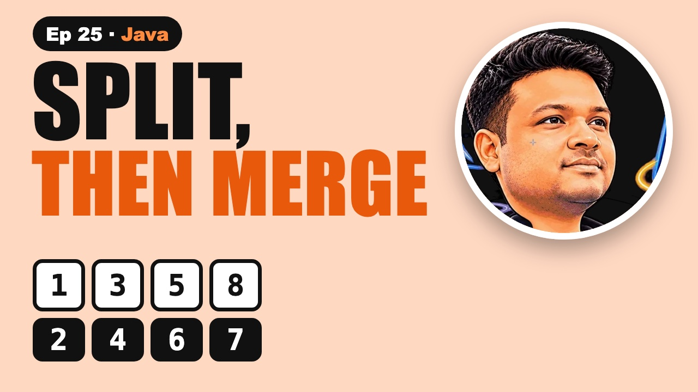

Merge Sort in Java: Implementation Explained Simply

The video goes live on 3 Dec 2026 at 6:00 PM IST. The notes are ready now.
?What this episode covers
Merge sort splits the array in half until every piece has one number, then merges the pieces back together in order. A single number is already sorted.
The merge step uses two pointers, one at the start of each sorted half. Take the smaller value, move that pointer on, and repeat. Using less than or equal keeps equal values in order, so the sort is stable. When one half runs out, copy whatever is left in the other. Forget those leftover loops and the last numbers silently disappear.
Every level of merging touches all n numbers, and halving gives about log n levels, so merge sort is O(n log n) in the best, average and worst case. A million numbers take about twenty million steps instead of the half a trillion bubble sort needs. The cost is O(n) extra space for the temporary array.
◎What you'll be able to do
- Divide and conquer
- The merge step
- Merge sort in Java
- Why O(n log n)
- The lost-number bug
{ }The Java code from the video
Type it out yourself, or copy it. Each file runs on its own with java FileName.java and prints the examples from the video.
import java.util.*;
// Episode 25: merge sort, divide and conquer. Run: java MergeSort.java
public class MergeSort {
static void mergeSort(int[] a, int lo, int hi) {
if (lo >= hi) return; // 0 or 1 number: already sorted
int mid = lo + (hi - lo) / 2;
mergeSort(a, lo, mid); // sort the left half
mergeSort(a, mid + 1, hi); // sort the right half
merge(a, lo, mid, hi); // merge the two sorted halves
}
// two pointers over a[lo..mid] and a[mid+1..hi]
static void merge(int[] a, int lo, int mid, int hi) {
int[] t = new int[hi - lo + 1];
int i = lo, j = mid + 1, k = 0;
while (i <= mid && j <= hi)
t[k++] = a[i] <= a[j] ? a[i++] : a[j++]; // <= keeps equal values in order (stable)
while (i <= mid) t[k++] = a[i++]; // leftovers from the left half
while (j <= hi) t[k++] = a[j++]; // leftovers from the right half
System.arraycopy(t, 0, a, lo, t.length);
}
// the bug: no leftover loops, so numbers go missing
static int[] buggyMerge(int[] left, int[] right) {
int[] t = new int[left.length + right.length];
int i = 0, j = 0, k = 0;
while (i < left.length && j < right.length)
t[k++] = left[i] <= right[j] ? left[i++] : right[j++];
return t; // missing leftovers! empty slots stay 0
}
public static void main(String[] args) {
int[] a = {8, 3, 5, 1, 7, 2, 6, 4};
System.out.println("before: " + Arrays.toString(a));
mergeSort(a, 0, a.length - 1);
System.out.println("after: " + Arrays.toString(a));
int[] left = {1, 3, 5, 8}, right = {2, 4, 6, 7};
System.out.println("buggy merge loses the 8: " + Arrays.toString(buggyMerge(left, right)));
int n = 1_000_000;
int[] big = new int[n];
Random r = new Random(1);
for (int i = 0; i < n; i++) big[i] = r.nextInt();
long t0 = System.nanoTime();
mergeSort(big, 0, n - 1);
System.out.println("sorted 1,000,000 random numbers in " + (System.nanoTime() - t0) / 1_000_000 + " ms");
}
}!The mistake to watch for
Stopping when one half runs out. The numbers left in the other half are never copied.
✦Key moments tap one to jump there
↗Full transcript
Read the whole lesson
You sort a million numbers with bubble sort and lose about half a trillion steps. Merge sort needs about twenty million. Here's how.
The idea fits in one sentence. Split it in half, sort each half, and merge them back together.
The merge step is where everyone gets stuck. By the end of this video, it'll feel easy.
Welcome back to Compiled Canvas. This is Episode Twenty Five of our DSA series. Last time, we learned bubble, selection and insertion sort.
Here's the plan. First, divide and conquer. Then the merge step, with two pointers. Then the full sort in Java. Then why it's O of n log n. And the bug that loses your last number. A cheat sheet. And an easy quiz at the end.
Let's go.
Here's an idea that powers half of all fast algorithms. And it starts by making the problem smaller.
Eight numbers. Eight, three, five, one, seven, two, six, four. Split them in half.
Keep splitting until every piece has one number. A single number is already sorted.
Now merge them back up, two at a time, in order. Three and eight. One and five. Two and seven. Four and six.
Then fours. One, three, five, eight. And two, four, six, seven. Then the final merge gives the whole sorted array.
The merge step. Two sorted lists into one sorted list. It's simpler than it looks.
Put one pointer at the start of each list. Compare. One is smaller than two, so one goes first.
Move that pointer on. Three against two. Two is smaller. Take two.
Keep going. Three, four, five, six, seven. The right list runs out, and eight is left over. Copy it across.
Each number is looked at once. So merging is O of n. Two pointers, one pass.
Here's merge in Java. A temporary array, and two pointers, i and j.
While both halves have numbers, take the smaller one. Less than or equal keeps equal values in order. That makes it stable.
Then copy whatever is left in either half, and copy the result back.
And the whole sort is just six lines. If the piece has one number or none, it's already sorted.
Sort the left half. Sort the right half. Recursion does the splitting for us.
Then merge them. That's merge sort.
Quick pause, before we go further. If you're finding this video valuable, hit subscribe to Compiled Canvas, and turn on the bell. It's free, it takes one second, and it helps me keep making this complete DSA series for you. Alright, back to it.
Now the part interviewers always ask. Why is it O of n log n?
Every level of merging touches all n numbers once. That's n work per level.
And how many levels? Halving eight gives four, two, one. Three levels. That's log of n.
n work times log n levels. A million numbers, about twenty levels, about twenty million steps.
Best, average or worst, it's always n log n. The catch? The temporary array costs O of n extra memory.
Here's the bug that makes merge sort silently lose your last number. I've seen it in so many first attempts.
You write the main loop, while both halves have numbers, and you stop there.
Merge one, three, five, eight with two, four, six, seven. The right half runs out first, and eight is never copied.
The fix is the two leftover loops. Always copy what's left from both halves.
Your turn. Pause. How many levels of splitting does merge sort need for sixteen numbers?
Four. Sixteen, eight, four, two, one. Log two of sixteen is four.
So, here's the whole thing in one cheat sheet. Pause and screenshot this.
Split in half until each piece has one number.
Merge two sorted halves with two pointers.
Always copy the leftovers.
Merge sort is always O of n log n.
It needs O of n extra space.
Less than or equal keeps it stable.
Okay, quiz time. Three easy questions. Pause the video, think, and then hit play.
Question one. What's the time complexity of merge sort, in the worst case?
Question two. How much extra space does merge sort use?
Question three. You forget the leftover loops. What goes wrong?
Ready?
Question one: O of n log n.
Question two: O of n, for the temporary array.
Question three: Numbers left in one half are lost.
How many did you get right? Tell me in the comments: three out of three, two, or one.
Let's recap. Divide the array into halves. Merge sorted halves with two pointers. Copy the leftovers. Always O of n log n. Costs O of n extra space.
Your homework. Code merge sort and run it on eight, three, five, one, seven, two, six, four. Then solve LeetCode eighty eight, Merge Sorted Array, and LeetCode nine twelve, Sort an Array. Java answers are on compiled canvas dot com. And tell me in the comments: how many levels for a thousand numbers?
Next episode, quick sort. Partitioning, pivots, and why it's usually the fastest.
And don't forget to subscribe to Compiled Canvas, so you don't miss anything new in tech and the job market. Keep coding, stay consistent, and I'll see you in the next one.